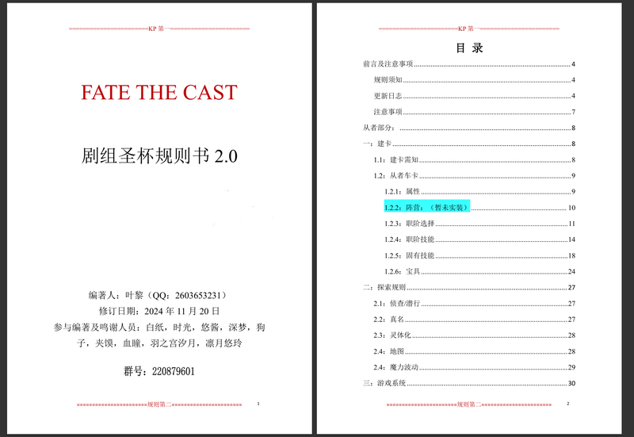
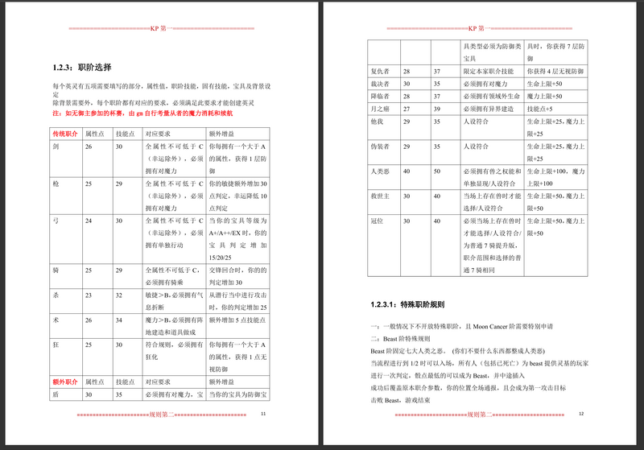
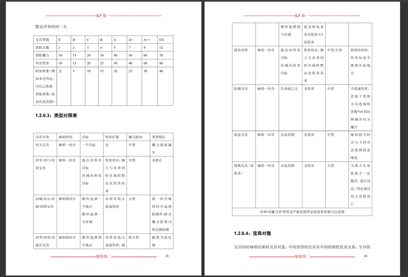

Available on Google Drive
We are a group of fans who yearned for more than the existing Holy Grail War stories offered by Type-Moon. We craved new narratives, we wanted to be part of the legend, and we wanted to forge our own tales. We are the FATE THE CAST Rule Writing Group.
As the lead designer for the combat modules, I engineered the underlying mathematical framework that drives the game's conflict resolution. My goal was to move away from simple "hit or miss" binary outcomes and create a system where attribute management and strategic resource allocation determine the flow of battle.
| Rank | Cost | Base Value | Design Logic |
|---|---|---|---|
| E | 1 | 10 | Minimal viable power. |
| C | 3 | 30 | Average baseline. |
| A | 5 | 50 | Peak standard performance. |
| A+ | 7 | 70 | Supernatural advantage. |
| EX | 9 | 90 | Game-breaking / Specialized power. |
Here is a general look at the finalized rulebook and some of the illustrative pages I designed.

Fig 1: Rulebook layout showcase.

Fig 2: Additional rulebook preview.

Fig 3: Interior page design.
I designed the numerical framework to mechanically enforce narrative pacing. By hard-coding HP thresholds and forcing resource exhaustion, players must trade blows and make difficult tactical decisions, simulating the "trading blows" trope of the source material.
Author: 叶黎
Co-Authors & Acknowledgments: 白纸, 时光, 悠酱, 深梦(Me), 狗子, 夹馍, 血瞳, 羽之宫汐月, 凉月悠玲